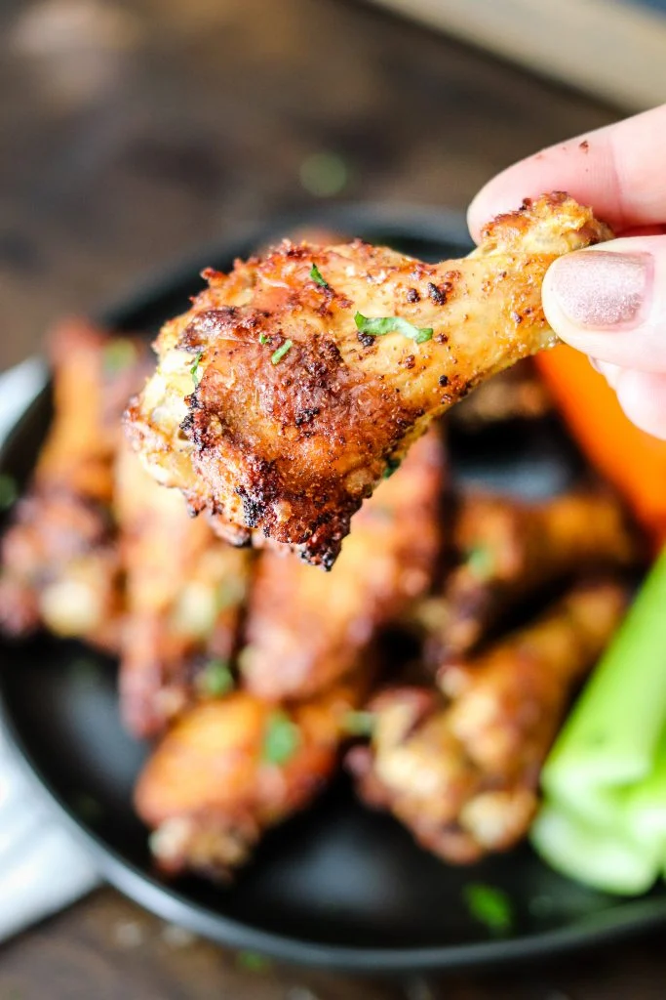

Air Fryer Chicken Wings

Description:
This easy recipe delivers perfectly crispy chicken wings with minimal
effort. Feel free to customize with your favorite sauces or seasonings for a
delicious twist. Great for game days, parties, or any time you're craving a
tasty and satisfying snack!
Ingredients:
- 2 lbs chicken wings, split at joints, tips removed
- 1 tablespoon baking powder (not baking soda)
- 1 teaspoon salt
- 1/2 teaspoon black pepper
-
Optional: Your favorite wing sauce for tossing (e.g., buffalo sauce,
barbecue sauce)
Instructions:
-
Pat the chicken wings dry with paper towels to remove excess moisture. In
a bowl, mix baking powder, salt, and black pepper. Toss the wings in the
dry mixture, ensuring even coating.
- Preheat your air fryer to 400°F (200°C).
-
Arrange the wings in a single layer in the air fryer basket, leaving space
between each wing. Cook for 25-30 minutes, flipping the wings halfway
through, until they are golden brown and crispy.
-
For an extra crispy finish, increase the temperature to 425°F (220°C) and
air fry for an additional 5-7 minutes.
-
If you like saucy wings, toss the crispy wings in your favorite wing sauce
in a bowl. Ensure each wing is coated evenly.
-
Plate the wings and serve them hot. Pair with your preferred dipping sauce
and enjoy your crispy air fryer chicken wings!